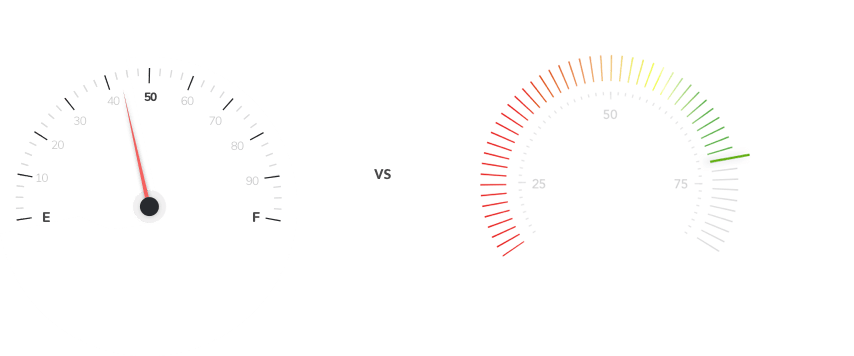
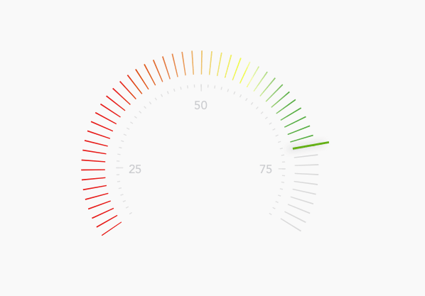
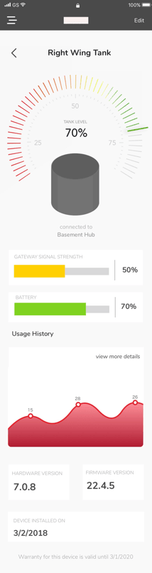

Beckett Corporation, founded in 1937, makes gas and oil burners for residential and commercial heating. They brought me in specifically to build something new: a consumer iOS app that would let homeowners monitor their heating fuel using IoT sensors attached to their tanks. The previous team had left an outdated style guide, and Beckett wanted a fresh start. What made this project interesting from day one was that Beckett had never worked with a UX designer before. They weren't sure what the role meant or why it mattered. That context would come up a lot.
Research, wireframes, preference testing, and hi-fi prototype delivered across agile sprints
3
Edge states designed: low fuel alert, sensor offline, and freeze alarm
4+
Rounds of preference testing across gauge formats, graph styles, and notification placement
The problem
It's January. The house is cold. Nobody knows why.
Homeowners with oil-heated homes had no reliable way to know their fuel level without physically checking the tank, often outside, in winter. Beckett's IoT sensor could transmit real-time tank data to the cloud, but there was no consumer app to surface it clearly.
The surface challenge was turning a single number, tank fill percentage, into something actionable: when to order, how urgent it is, what to do when something goes wrong.
The hidden challenge was more technical. To show meaningful information, the app had to calculate the actual volume of oil remaining based on each tank's physical dimensions. Tanks come in six different shapes and sizes, each requiring a different calculation. Getting the math right was a prerequisite for everything else.
"IoT design lives or dies on edge cases. A tank reading of 0% could mean empty, or it could mean the sensor is offline. Those two states need very different responses."
Research
Three methods, one consistent finding: simplicity over data.
I distributed surveys to current Beckett users, ran user interviews with A/B testing on notification behavior, and consulted safety engineers inside Beckett. Each method answered a different question.
📋
User surveys: what information do people actually need?
Key finding: users didn't think about "sensors" at all. They cared about the physical tank. So we abstracted the sensor layer away entirely and built the interface around the tank as the primary object. Surveys also confirmed three alert states users expected: low tank level, low transmitter battery, and maximum fuel usage.
🔔
User interviews + A/B testing: where should notification controls live?
The question wasn't just "do you want push notifications" but where users expected to control them. One global settings page, or per device? Testing found that users surprisingly wanted per-device control, managing each tank's alerts from that tank's own settings page rather than a central hub.
🏭
Industry specialists: a use case user research missed
Safety engineers at Beckett flagged a critical scenario that hadn't surfaced in user interviews: freeze alarm. When temperatures drop too low, oil can't be stored safely or efficiently. This became the fourth edge state in the app.
Research notes and user interview themesbeckett-research.png
Requirements
Mapping the system before designing a single screen.
Before wireframing, I mapped the IoT system into three objects users would need to monitor. This became the foundation for the information architecture and determined what data each screen had to surface.
1
The Tank
The physical object users cared about. Needed to show: current oil level, usage and fill history, tank dimensions (for volume calculation), notification thresholds, and installation date.
2
The Gateway Hub
The WiFi-enabled device connecting local sensors to the cloud. Needed: device ID and name, installation date, warranty information, and an option to disconnect from the account.
3
The Sensors
Bluetooth devices installed inside each tank. Needed to surface: current tank level, battery level, signal strength, and last message received (to detect stale data).
Design
Solving the tank problem before solving the gauge problem.
Before I could design the main dashboard, I had to figure out how users would tell the app what kind of tank they had. The volume calculation depended on it.
My first instinct was to auto-detect the dimensions. It wasn't feasible. There are hundreds of tanks on the market, all different shapes and sizes, each holding different volumes. No clean way to handle that automatically. So I proposed a hybrid: research the most common configurations, build five presets that cover the majority of residential installs, and give users a custom input field for anything else. Volume gets calculated on the fly from whatever dimensions they enter. It was the balance between usability and what engineering could actually build.
With that solved, I moved to the gauge. Beckett had an existing style guide I worked within: red for setup and onboarding screens to keep the brand prominent, grey for everyday-use screens to keep the interface calm.


Preference testing the gauge
Beckett liked an odometer-style numerical readout. I felt users would also need something more visual to scan quickly. I ran a preference test across multiple formats. The results came back nearly split between the odometer and a color-fill bar. I was a little surprised, but also relieved: both were clearly viable, which meant I wasn't wrong on either end. It also pushed me toward something I hadn't considered before: combine them. A vertical fill bar that shifts green to amber to red as level drops, with a numerical readout and "approximately X days remaining" below.
Odometer only
Precise, but slow to scan
Beckett preferred this. Users found the number useful but missed the at-a-glance urgency of a visual fill level.
Combined: fill bar + readout
Visual urgency and precision together
Color fill for immediate status, numerical readout for precision, days remaining for context. Addressed what both sides of the test preferred.
✓ Final design

Iteration
Client feedback, user feedback, and one engineering constraint.
After initial hi-fi mockups, I gathered feedback from both Beckett and users. Most of it aligned. Some of it didn't.
📈
Bar graph changed to line graph
I had used a bar graph for fuel history. Beckett pointed out that fuel level is continuous, not discrete, so the data was better represented as a line graph with days of the week on the x-axis and an option to see extended history.
🔢
Users wanted gallons AND percentage
Initial designs showed only one unit. Users wanted to toggle between gallons and percentage for both the display and alert thresholds, depending on how they personally thought about their fuel.
☰
Convincing the client on the hamburger menu
Beckett didn't like the hamburger menu and wanted to just display everything at the top of the screen. I had to explain why that wasn't possible. The app had too much to surface for a flat top bar to handle cleanly. I walked them through how the pattern works and what we'd be giving up without it. They came around. That conversation was pretty typical of working with Beckett: they'd never been through a design process before, so conventions the industry takes as given needed to be explained from first principles.
⚙️
Simplified device setup to reduce dev cost
I had designed a full step-by-step "Add a new device" flow as a standalone section. The development team flagged it would take significantly longer to build. I repurposed the existing tank settings page for setup instead, fewer total screens and the same functional outcome.

Edge cases
The happy state needed almost no design. These four did.
A full tank with a connected sensor is the easy state. The design work was in what happens when things don't go to plan, and making sure users could tell the difference between a real emergency and a routine alert.
🔴
Low fuel alert, triggered at 20%
A direct "Order fuel" CTA surfaces on the main dashboard. Timing was critical: too early caused alert fatigue, too late caused anxiety. Testing found 20% was the right threshold, giving homeowners enough time to schedule a delivery without the sense of emergency.
📡
Sensor offline, stale data state
A "Last updated X hours ago" timestamp makes clear that the reading may not reflect current levels. This distinction mattered: a 0% reading from a working sensor means empty, a 0% reading from an offline sensor means unknown. Users needed to tell the difference without panicking.
🌡️
Freeze alarm, surfaced by safety engineers
When temperatures drop below a safe threshold, oil can degrade and sensors can fail. This use case came from Beckett's internal safety engineers rather than user research, which is why it would have been missed without the specialist consultation. A distinct warning state prompts users to check on their tank.
Low fuel alertbeckett-low-fuel.png
Sensor offlinebeckett-offline.png
Reflections
What I took from this project.
Solve the math before solving the design
The gauge was the visible challenge, but the tank volume calculation was the prerequisite. Understanding the problem fully before opening Sketch saved a significant amount of rework.
Where you put controls matters as much as what they do
The A/B test on notification placement was the most surprising research finding. Global settings vs. per-device felt like an implementation detail, but users had a strong and consistent intuition about it.
Specialists catch what users miss
The freeze alarm state came entirely from an internal Beckett engineer. User interviews would never have surfaced it. Building time for specialist consultation into the research phase was worth it.
Teaching UX while doing UX is its own skill
Beckett had never worked with a designer before. They didn't know what UX meant or why it was needed. By the end of the project, making the case for a design decision had become as natural as the design work itself.
This project was a lot of firsts
First time working directly with engineers. First full agile process from kickoff to handoff. First IoT product. The problems were genuinely complex and the constraints were real. And I think that's exactly why the lessons stuck. You learn differently when the stakes are high from the start.
What I'd still add
A direct reorder integration so users could schedule a fuel delivery from within the app. In testing, being redirected to a third-party site felt abrupt. I'd also add a FAQ and in-app support path for first-time setup.